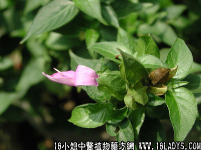

别名：红蓝、青丝线。
植物名：枪刀药。
生长环境：本品为小灌木，生于平原地区，疏灌木丛或路旁，或为盆栽。
分布：广东以广州附近较多，我国南部各地多为栽培的。
入药部分：全草。
采集期：夏秋。
自采地点：家种。
性味：性微凉、味甘淡。
功能：止咳、清肺热、散瘀。
主治、用量和用法：1、咳嗽：干用5钱至1两，清水煎服，或加猪瘦肉同煎；2、内伤咳血：用法同上；3、热眼：干用5钱至1两，清水煎服，或加蜜枣同煎服。
验方：（治内伤咳血方）红丝线5钱、红菱根5钱、红李根5钱、五爪龙根5钱、清水四碗，煎成一碗，温服。
（方解）方中红丝线止血，红菱根清金润肺；红李根去瘀生新；五爪龙通血脉，为治疗阴虚、咳血的有效方剂。
（方歌）红丝线治内伤咳，止血清金称第一，加入红李与红菱，五爪三红效确实。
附注：假红丝线与本品形态略似，煎水呈青色，味极苦，功用不同；本品种干时青色，煎水呈红色，味甘淡，可作鉴别。
本文解释权归中药大全，本文地址：https://www.daquan.com/post/1601.html